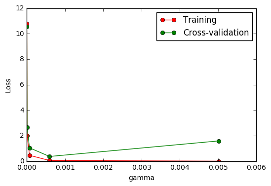

交叉验证 3 Cross-validation
作者: Bhan 编辑: 莫烦 2016-11-03
学习资料:
连续三节的交叉验证(cross validation)让我们知道在机器学习中验证是有多么的重要,
这一次的 sklearn 中我们用到了sklearn.learning_curve当中的另外一种,
叫做validation_curve,用这一种曲线我们就能更加直观看出改变模型中的参数的时候有没有过拟合(overfitting)的问题了.
这也是可以让我们更好的选择参数的方法.
validation_curve 检视过拟合
继续上一节的例子，并稍作小修改即可画出图形。这次我们来验证SVC中的一个参数 gamma 在什么范围内能使 model 产生好的结果. 以及过拟合和 gamma 取值的关系.
from sklearn.learning_curve import validation_curve #validation_curve模块
from sklearn.datasets import load_digits
from sklearn.svm import SVC
import matplotlib.pyplot as plt
import numpy as np
#digits数据集
digits = load_digits()
X = digits.data
y = digits.target
#建立参数测试集
param_range = np.logspace(-6, -2.3, 5)
#使用validation_curve快速找出参数对模型的影响
train_loss, test_loss = validation_curve(
SVC(), X, y, param_name='gamma', param_range=param_range, cv=10, scoring='mean_squared_error')
#平均每一轮的平均方差
train_loss_mean = -np.mean(train_loss, axis=1)
test_loss_mean = -np.mean(test_loss, axis=1)
#可视化图形
plt.plot(param_range, train_loss_mean, 'o-', color="r",
label="Training")
plt.plot(param_range, test_loss_mean, 'o-', color="g",
label="Cross-validation")
plt.xlabel("gamma")
plt.ylabel("Loss")
plt.legend(loc="best")
plt.show()

由图中可以明显看到gamma值大于0.001，模型就会有过拟合(Overfitting)的问题。
如果你觉得这篇文章或视频对你的学习很有帮助, 请你也分享它, 让它能再次帮助到更多的需要学习的人. 莫烦没有正式的经济来源, 如果你也想支持 莫烦Python 并看到更好的教学内容, 赞助他一点点, 作为鼓励他继续开源的动力.